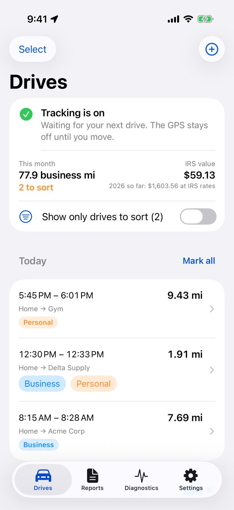
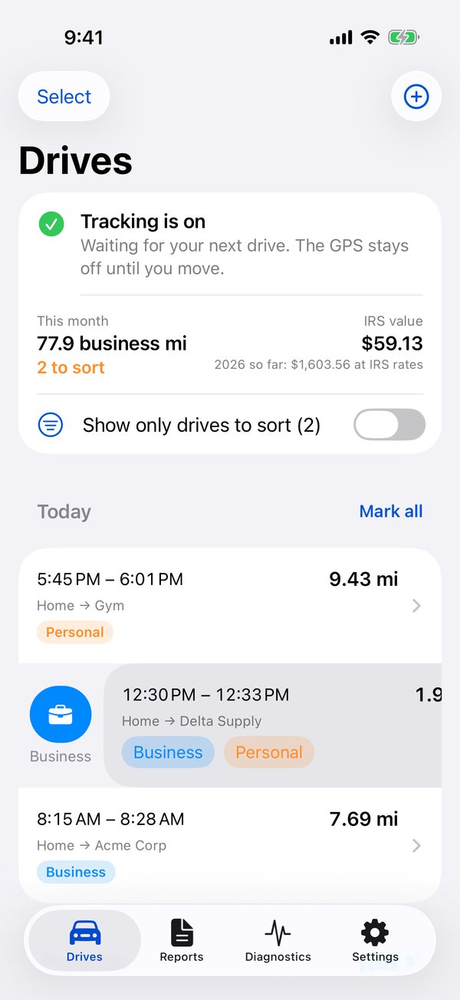
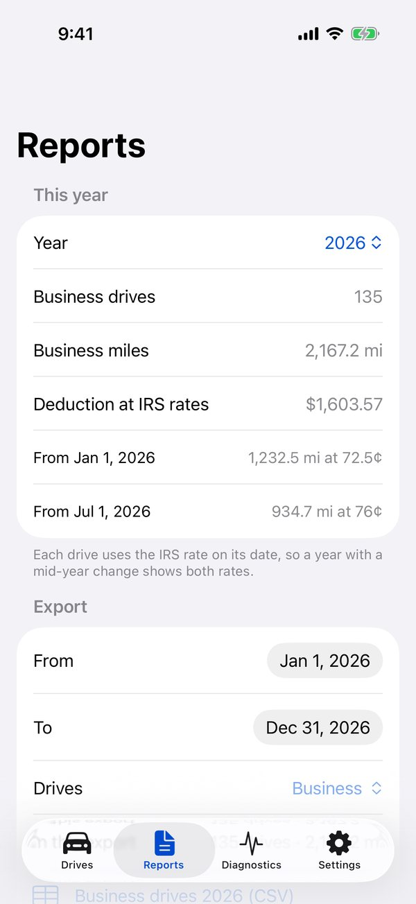
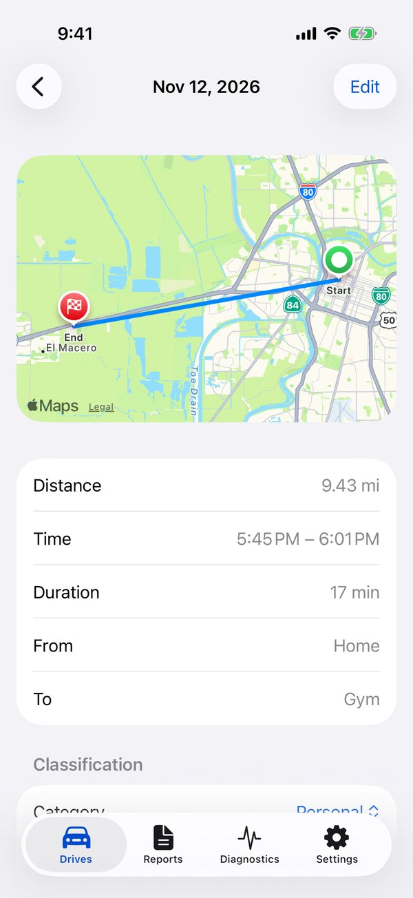
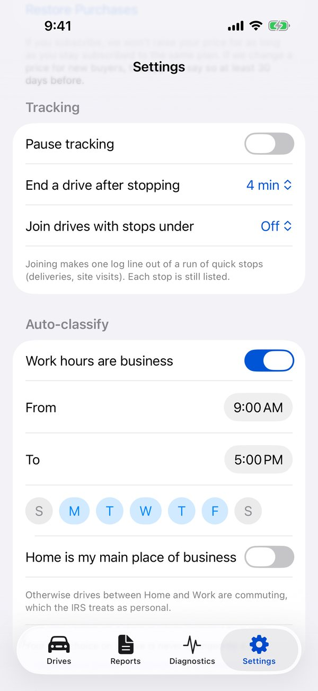
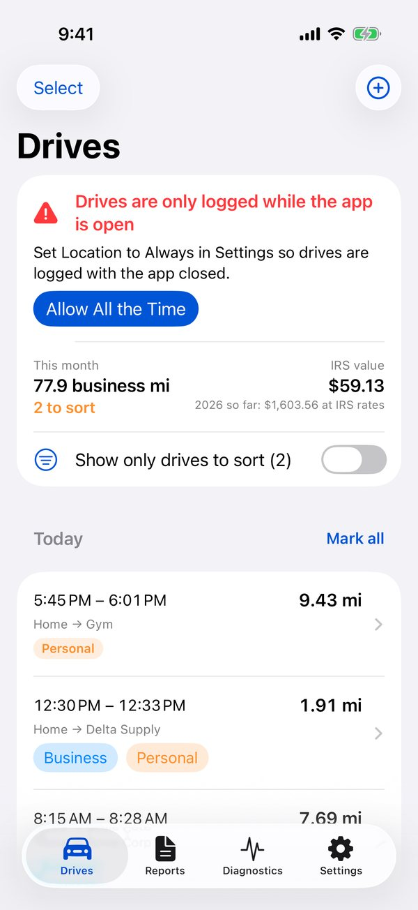
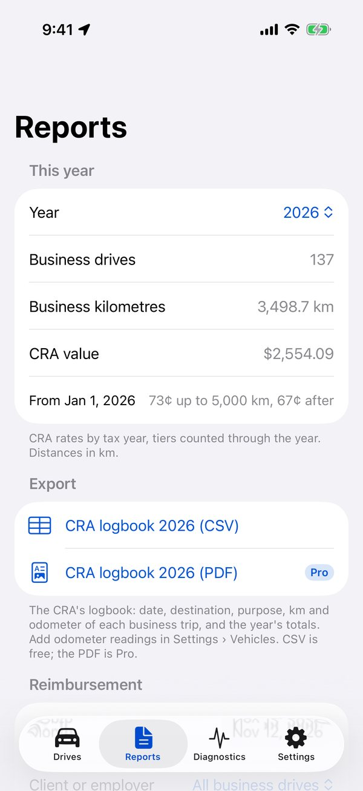

Every drive logged, without lifting a finger.
Milebird notices when you start driving and logs the drive by itself: when, from where to where, and how many miles. Sort it as Business or Personal with one tap. There's no account to make, and your drives stay on your iPhone. In English and French.
Tuesday, November 10 3 drives
- 8:02 – 8:31 AM12.4 miHome → Client officeBUSINESS
- 12:15 – 12:24 PM3.1 miClient office → CaféPERSONAL
- 1:05 – 1:40 PM15.8 miCafé → SupplierUNSORTEDOne tap: Business or Personal
November so far, business412.6 mi · $313.58
2026-11-10 08:02–08:31 · Home → Client office · 12.4 mi · Business: site visit · 76¢/mi = $9.42
What Milebird does
Logs every drive by itself
Drive, park, and the trip appears in your list a few minutes later. No need to open the app or press start. CarPlay, or your car's Bluetooth once you mark it as yours, helps start and end each drive. Drives from 0.2 miles count. You can still start or end a drive by hand, or add one you forgot.
One tap to sort
Business or Personal right on the row, or swipe; medical and charity drives too. Mark a whole day at once, and Undo if you slip. Edit a drive's distance, times or places (the phone's own measurement is kept), and add parking, tolls and notes. Milebird never nags you to classify drives; reminders are there only if you turn them on.
Stops handled sensibly
Red lights, drive-throughs and a traffic jam don't split a drive; its stops are listed inside it. Doing deliveries or site visits? Join drives with short stops into one log line, or split a drive at any stop.
The IRS rate for each date
Every drive is valued at the IRS rate in force on its date, including the July 1, 2026 rise from 72.5¢ to 76¢ a mile. The rate table is yours to edit. What a mileage log must show.
Speaks up when tracking can't work
If Location, Precise Location, Motion & Fitness or Background App Refresh is off, Milebird shows a red banner and sends one notification per problem, and it checks again every day. A pause always ends when you said it would.
Not every trip is a drive
Walks, runs, bike rides, flights and a phone jiggling in a parked car aren't logged. A ride that looks like a train or a bus, or a car that isn't one of yours (told apart by CarPlay or Bluetooth), is flagged for you to keep or mark Not a drive.
Your drives, your files
Export every drive as CSV whenever you like, free. Save a backup file and restore it on any iPhone, and import the CSV export of another mileage app. Drives also move to a new iPhone with your iCloud or computer backup.
Reports for tax time
Drives shows what the year so far is worth. Reports adds up the year's business miles, parking and tolls at the rate for each date, and exports a CSV by date range, kind of drive and vehicle. Send to my accountant mails the month's log. Milebird Pro adds the IRS-ready PDF mileage log and reimbursement reports for a client or employer.
Lock Screen and Siri
While a drive is logged, a Live Activity shows its miles on the Lock Screen and in the Dynamic Island. Ask Siri to start a drive, end it, sort your last drive or tell you this month's business miles.
Canada, the UK and Australia
Pick your region in Settings: kilometres and the CRA's tiered rates in Canada, HMRC's 55p and 25p in the UK, the ATO's cents per kilometre in Australia, each counted through its own tax year, with each authority's own logbook: CSV free, PDF with Pro.
No account, no ads
Nothing to sign up for or get logged out of. No ads, no analytics and no third-party code. Your locations and drives are processed and stored on your iPhone.
Diagnostics anyone can read
See when iOS last woke Milebird, how long GPS ran today, an estimate of the battery it used, and every permission. Share the log with support in one tap.







How detection works, in plain words
Milebird keeps the GPS off between drives and lets iOS tell it when you've moved. That's what makes automatic tracking cheap on battery.
- Between drives, GPS is off. Milebird asks iOS to wake it when you leave a place: a small fence around where you parked (about 150 meters), iOS's significant-location changes and visits, and Motion & Fitness noticing you're in a vehicle.
- It checks for up to three minutes. On a wake-up, GPS comes on and Milebird looks for vehicle speeds and in-car motion. A walk to the mailbox ends the check with no drive logged. Motion history puts the drive's start back to when you pulled away.
- While you drive, GPS records the route. Miles come from the track you actually drove, with bad fixes and jitter filtered out. If GPS drops in a tunnel, or iOS woke Milebird a little late, the missing stretch is drawn as a straight line and shown as estimated, never padded.
- At a stop, it waits. Shorter than the stop timeout (4 minutes by default, 1 to 15 in Settings, and longer while Motion says you're still sitting in the car), it's the same drive. Walk away from the car and the drive ends where you parked.
- The drive lands in your list. A few minutes after you park, ready for one tap. Nothing about it leaves your iPhone, unless you turn on iCloud sync (Pro), which keeps it in your own private iCloud.
Battery
GPS runs only while Milebird checks a wake-up, while you drive and while you're stopped mid-drive. The rest of the time it waits on iOS's low-power wake-ups. Diagnostics shows the GPS time for each day, the app's own battery estimate (about 4% of a battery per hour of driving) and the measured battery level at the start and end of every drive.
What it can't do
iOS decides exactly when to wake an app. When it wakes Milebird late, the first stretch of the drive is an estimate, and it's labeled as one. Approximate Location can't measure miles, so Precise Location must stay on. And no app can log drives with Location turned off, so Milebird tells you the moment it is.
Free, and Milebird Pro
Automatic tracking is free with no monthly cap. Pro is for the work done for you at volume and at tax time.
| Feature | Free | Pro |
|---|---|---|
| Automatic drive detection, unlimited drives every month | Yes | Yes |
| Start or end a drive by hand, add a forgotten drive | Yes | Yes |
| See, sort, edit, split and join every drive you've logged | Yes | Yes |
| IRS rate by date, and what this month's business miles are worth | Yes | Yes |
| CSV export and a backup file, any time | Yes | Yes |
| Tracking-health alerts and Diagnostics | Yes | Yes |
| Vehicles | One | Several, with odometer readings |
| Auto-classify rules: work hours, named places, the IRS commute rule | No | Yes |
| IRS-ready PDF log and employer reimbursement reports | No | Yes |
| Clients and custom rates | No | Yes |
| iCloud sync across your iPhones | No | Yes |
Pro yearly
$49.99 a year
New subscribers get 14 days free first, with a reminder 2 days before the trial ends. Then $49.99 a year.
Pro monthly
$6.99 a month
For a season or tax time. Cancel any month.
Pro lifetime
$119.99 once
One payment for Pro, with no renewals.
Your drives never lock
Every drive you log stays visible, editable and exportable whether you pay or not. If Pro ends, rules stop sorting new drives, but every drive, and every choice the rules already made, stays.
Our price promise
Subscribers keep the price they signed up at for as long as they stay subscribed. Lifetime is one payment, with no renewals. If the price ever changes for new buyers, the app says so 30 days ahead.
US prices; the App Store shows the price where you are. Billed by Apple, renews automatically until you cancel; cancel any time in Settings › your name › Subscriptions. See the Terms of Use.
Switching from MileIQ, Everlance or Driversnote
Several mileage apps changed their prices in 2026. These are the prices each charged on the US App Store on November 11, 2026, and the free plan its website described the same day.
| App | Monthly | Yearly | Free plan |
|---|---|---|---|
| MileIQ | $13.99 | $139.99 | 40 drives a month |
| Everlance Starter | $10.99 | $89.99 | 30 automatic trips a month per user; manual trips unlimited |
| Everlance Professional | $19.99 | $119.99 | |
| Driversnote | $14.00 | $150.00 | 15 trips a month |
| Milebird Pro | $6.99 | $49.99 | Unlimited automatic drives; CSV export |
MileIQ's list price was $8.99 a month and $89.99 a year before its 2026 increase; PricingSaaS, which tracks pricing pages, recorded the new prices in its second-quarter 2026 snapshot (detected July 3, 2026). Everlance's pricing page also still shows older Starter prices of $8.99 a month and $69.99 a year. Driversnote's website lists Pro at $11 a month. Prices change: check each app's App Store page. Details and sources: MileIQ's 2026 price increase and the alternatives.
How to move
- Download your history first. Export the reports or files you need from your current app for every year you may need them. The IRS generally expects you to keep records for 3 years after you file. Milebird can import another app's CSV export (Settings › Your data › Import drives from another app); keep the original files with your tax records too.
- Install Milebird and allow Location and Motion. Choose Always and keep Precise Location on, then allow Motion & Fitness. Drives are logged from that moment, with nothing to sign up for.
- Run both for a week, if you like. Compare the drives and miles each one logs before you decide.
- Cancel the old subscription. If you pay through Apple: Settings › your name › Subscriptions. If you pay on the company's website, cancel there.
Guides to mileage records
Plain answers about mileage logs and taxes, each linked to its official sources.
- IRS mileage log requirements: what your log must showWhat the IRS asks a mileage log to show for each business drive, when to write it down, how commuting counts, and the 2026 rates by date, from IRS Publication 463.
- How to track mileage for taxes automatically on iPhoneHow automatic mileage tracking works on an iPhone, the settings that keep it logging, and a weekly habit that keeps the log the way the IRS expects.
- MileIQ's 2026 price increase and the alternativesMileIQ's US price rose from $89.99 to $139.99 a year in 2026. What it and other mileage trackers cost on November 11, 2026, and what each free plan includes.
Questions
Is Milebird free?
Yes. Automatic tracking is free with no monthly cap: every drive is logged, and you can view, sort, edit and export every one as CSV, with no account. Milebird Pro adds auto-classify rules, IRS-ready PDF and reimbursement reports, several vehicles with odometer readings, clients and custom rates, and iCloud sync, for $6.99 a month, $49.99 a year (14 days free for new subscribers) or $119.99 once, in the US.
Which IRS mileage rate does Milebird use?
The rate in force on the date of each drive. For 2026 the IRS set the business rate at 72.5 cents a mile from January 1 and raised it to 76 cents for miles driven from July 1, 2026 (medical and moving: 20.5 cents, then 23.5; charity: 14 cents all year). So a drive on June 30 is valued at 72.5¢ and one on July 1 at 76¢. You can edit the table, or add a rate when the IRS announces a new one.
How much battery does it use?
Little between drives, because the GPS is off: iOS wakes Milebird when you move. GPS runs while Milebird checks a possible drive, while you drive and at stops during a drive. Diagnostics shows the GPS time for each day and the app's own estimate (about 4% of a battery per hour of driving), with the measured battery level at the start and end of each drive.
Do my drives or my location leave my iPhone?
Not to us. Location and motion are processed on your iPhone, and your drives are stored there (and in your iPhone's own iCloud or computer backup). With Milebird Pro you can turn on iCloud sync, which keeps them in your own private iCloud, readable only by your Apple Account. Milebird has no account, no server, no analytics and no third-party code. Maps are drawn with Apple Maps, and addresses for places you haven't named come from Apple's geocoder. See the privacy policy.
How do I export my drives?
Settings › Your data › Export all drives (CSV) gives you every drive with its date, start and end times, from, to, miles, category, purpose, vehicle, rate and value. Send it to Mail, Files or your accountant. You can also save a backup file there and restore it on any iPhone. Both are free, always.
How do I cancel Milebird Pro?
Pro is billed by Apple. On your iPhone go to Settings › your name › Subscriptions › Milebird and cancel at least 24 hours before the current period ends. You keep every drive, and you can still export them all.
Do I need an account?
No. There's nothing to sign up for, so there's nothing to get logged out of. Open the app, allow Location and Motion & Fitness, and drive.
What if I ride as a passenger or take the train?
Rides that look like a train or a bus, and rides in a car that isn't one of yours (Milebird tells your cars apart by their CarPlay or Bluetooth connection, once you mark them in Settings › My cars), are flagged for you. Keep the drive, or tap Not a drive to keep it out of your totals.
Are drives between home and work business miles?
Usually not. The IRS treats driving between home and your regular place of work as personal commuting, however far it is. Milebird's rules follow that, unless you tell it your home is your main place of business. See what an IRS mileage log must show.
Does it work with no cell signal?
Yes. GPS doesn't need a cell signal, and detection and logging happen on the iPhone with no internet. Only the street map behind a drive's route needs a connection to load.
Can I bring my drives from another app?
Yes, from a CSV export: Settings › Your data › Import drives from another app (CSV). Milebird reads the columns by their names (date, times, from, to, miles or kilometres, purpose, category, vehicle), skips rows it can't read and tells you how many, and doesn't make duplicates.
Does it work in Canada, the UK or Australia?
Yes. Choose your region in Settings › Region and rates: Canada and Australia use kilometres, and the app values business drives at the CRA's rates (73¢ a kilometre for the first 5,000 km in 2026, 67¢ after), HMRC's approved mileage allowance (55p a mile for the first 10,000 business miles from 6 April 2026, 25p after) or the ATO's cents per kilometre (91¢ for 2026–27, up to 5,000 km per car). Each exports its own logbook: the CRA's in km (in English or French), HMRC's for the tax year from 6 April, the ATO's car log and 12-week logbook. The CSV is free; the PDF comes with Pro.
Which iPhones and languages?
iPhone with iOS 17 or later, in English or French.
Something not working? The support page covers permissions, Low Power Mode and exporting, or write to laddothis at gmail dot com. A person answers, usually within one business day.